library_books Публикации
2024
[1] Предикторы когнитивной и лингвистической сложности текстов РКИ
Сборник материалов VII Междун. форум РКИ, Москва, 21-22 ноября 2024 г.
Методическое пособие
2024
[2] Номинации референтов культурного кода России как предиктор сложности текстов РКИ
Международный форум «Взаимодействие науки и общества», Алматы, 14-16 октября
2024 г.
2024
[3] Лингвистическое профилирование учебных и художественных текстов
Журнал «Русистика». 2024. Т. 22. № 4. С. 555–578
Scopus
2024
[4] Функционал RuLingva для анализа текстов РКИ
Международная научная конференция Казань, 18-20 ноября 2024 г.
2025
[5] Аналитика учебных текстов для изучения русского языка как иностранного
Международный семинар по обработке естественного языка, Томск, 2025 г.
2025
[6] Оценка сложности учебного текста по русскому как иностранному: перспективы и вызовы
использования искусственного интеллекта
Русистика. 2026. Т. 24. № 1. С. 120–137.
http://doi.org/10.22363/2618-8163-2026-24-1-120-137 EDN: VEOLNH
Scopus
2026
[7] КОГНИТИВНАЯ СЛОЖНОСТЬ ВТОРИЧНЫХ ТЕКСТОВ: ПРОПОЗИЦИОНАЛЬНЫЙ ПОДХОД
Мартынова Е.В. КОГНИТИВНАЯ СЛОЖНОСТЬ ВТОРИЧНЫХ ТЕКСТОВ: ПРОПОЗИЦИОНАЛЬНЫЙ ПОДХОД
// Слово, высказывание, текст в когнитивном, прагматическом и культурологическом аспектах :
материалы XIII Междунар. науч. конф., Челябинск, 23–24 апр. 2026 г. [научное сетевое издание] /
отв. ред. Л. А. Нефедова. — Челябинск : Изд-во Челяб. гос. ун-та, 2026. — С. 258-260. DOI:
10.47475/9785727121313_258
2026
[8] Механизм сложности при адаптации текста
Андреева, М. И. Механизм сложности при адаптации текста / М. И. Андреева, М. И.
Солнышкина, С. Сарра // Вестник Российского университета дружбы народов. Серия: Теория языка.
Семиотика. Семантика. – 2025. – Т. 16, № 3. – С. 821-844. – DOI
10.22363/2313-2299-2025-16-3-821-844. – EDN CTUQVT.
Scopus
2026
[9] Bert for Classification of Russian Functional Styles
Solovyev V. D., Ten A. M., Solnyshkina M. I., Andreeva M. I. Bert for Classification of Russian Functional Styles / V. D. Solovyev, A. M. Ten, M. I. Solnyshkina, M. I. Andreeva // Computacion y Sistemas. – 2025. – Vol. 29, No. 2. – DOI 10.13053/cys-29-2-5712. – EDN QGSDMX
Scopus
Web of Science
2026
[10] Формула сложности учебного текста РКИ (на материале биографий)
Солнышкина М.И., Андреева М.И., Куприянов Р.В., Замалетдинов Р.Р. Формула сложности учебного текста РКИ (на материале биографий) // ВЕСТНИК ВОЛГОГРАДСКОГО ГОСУДАРСТВЕННОГО УНИВЕРСИТЕТА. СЕРИЯ 2: ЯЗЫКОЗНАНИЕ. - 2026. - Т. 25, № 4. - в печати
Scopus
Web of Science
2026
[11] Межъязыковые флуктуации сложности текста в период 1860-2008 гг.
Бочкарев В.В., Соловьев В.Д., Солнышкина М.И., Мартынова Е.В. Межъязыковые флуктуации сложности текста в период 1860-2008 гг. // ВЕСТНИК ВОЛГОГРАДСКОГО ГОСУДАРСТВЕННОГО УНИВЕРСИТЕТА. СЕРИЯ 2: ЯЗЫКОЗНАНИЕ. - 2026. - Т. 25, № 4. - в печати
Scopus
Web of Science
article Представление результатов
Просмотр изображения
group Исполнители
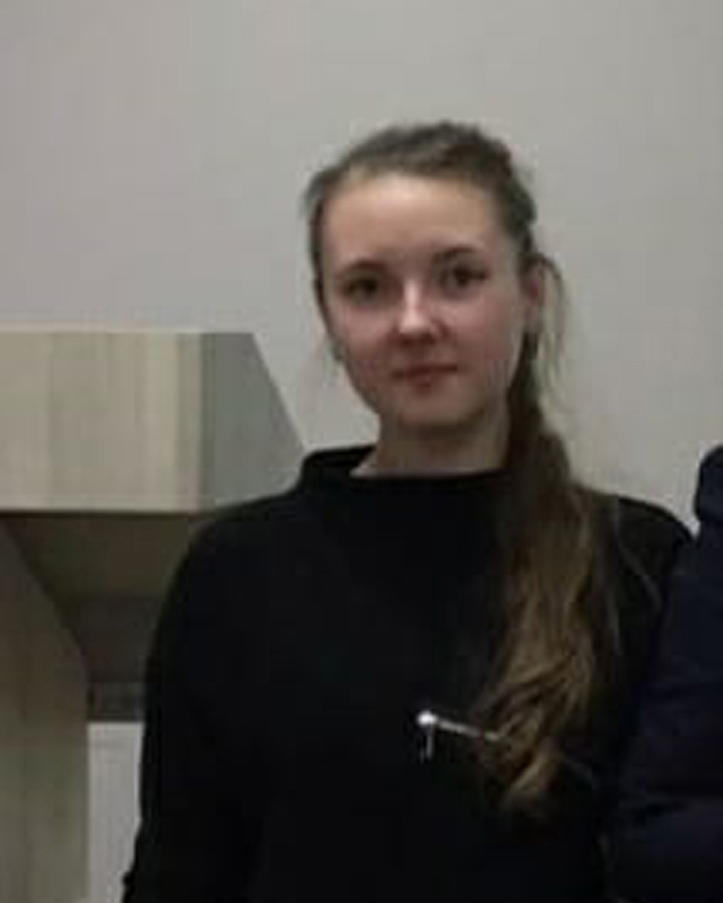
Мария Игоревна Андреева
к.фил.наук
Старший научный сотрудник НИЛ «Текстовая аналитика»
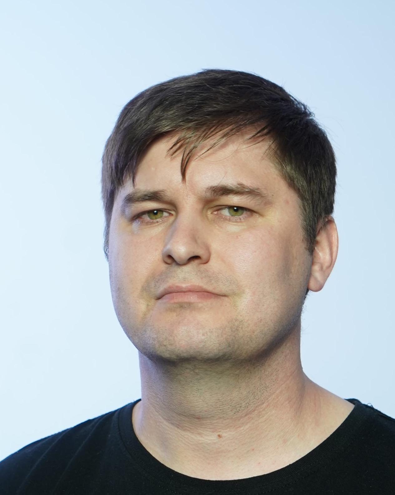
Андрей Владимирович Данилов
к.пед.наук
Старший научный сотрудник НИЛ «Текстовая аналитика»
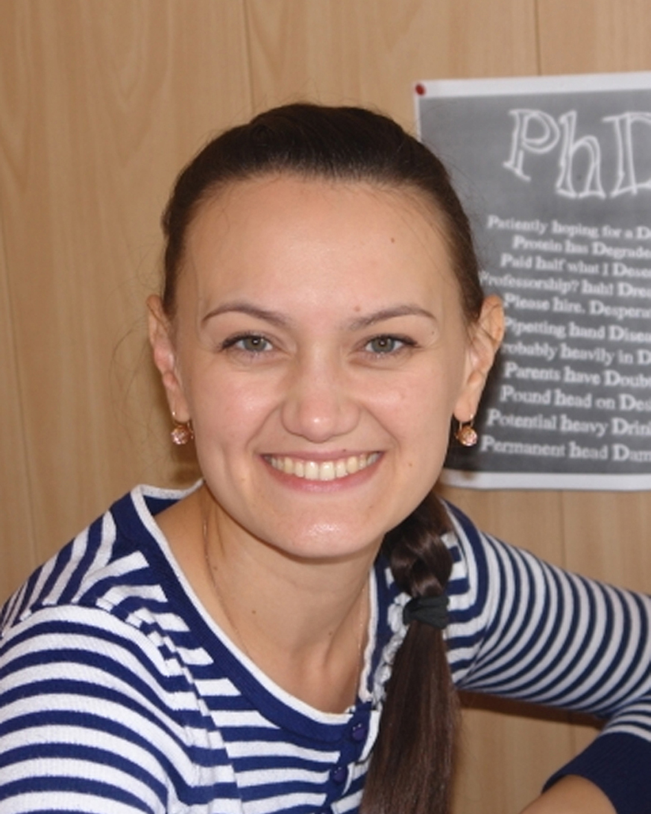
Галия Маратовна Гатиятуллина
Младший научный сотрудник НИЛ «Текстовая аналитика»
Константин Валерьевич Воронин
Ассистент кафедры теории и практики преподавания иностранных
языков
Екатерина Владимировна Мартынова
Старший научный сотрудник НИЛ «Текстовая аналитика»
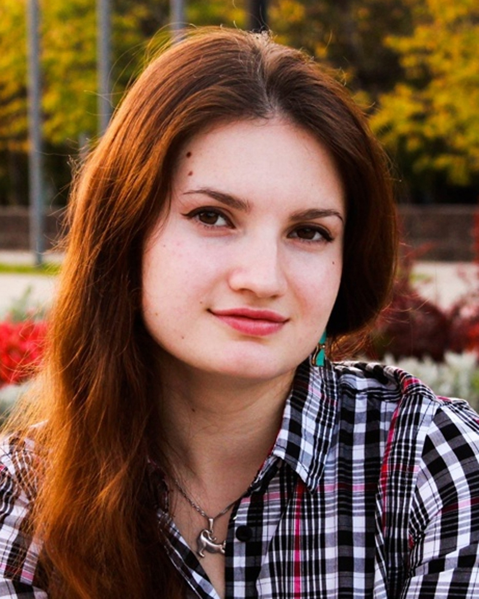
Наиля Илдаровна Муфазалова
Научный сотрудник НИЛ «Текстовая аналитика»
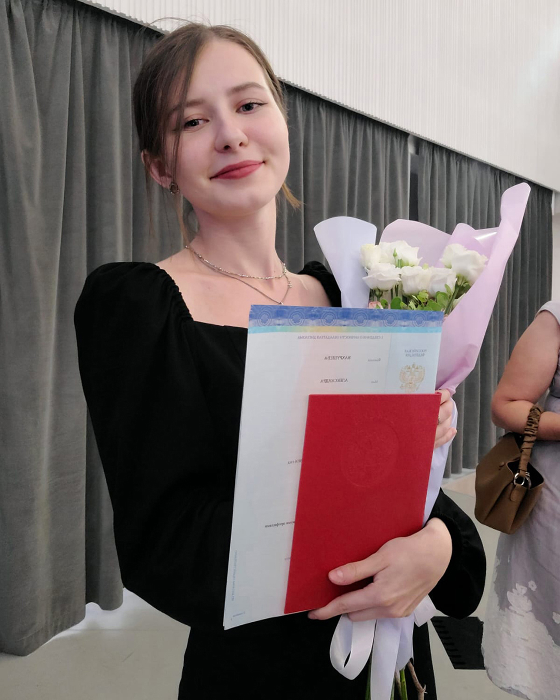
Александра Яковлевна Вахрушева
Научный сотрудник НИЛ «Текстовая аналитика»
photo_library Галерея
Фото с конференций и мероприятий проекта
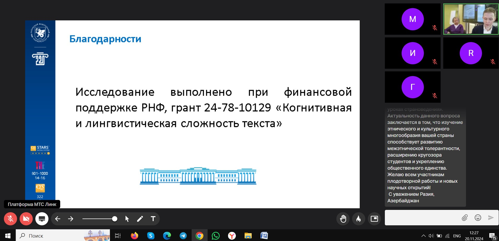
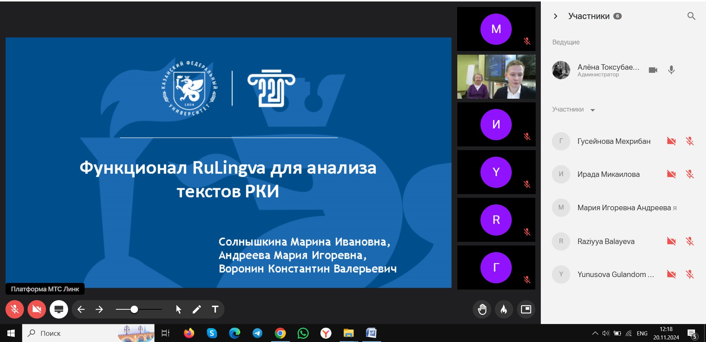
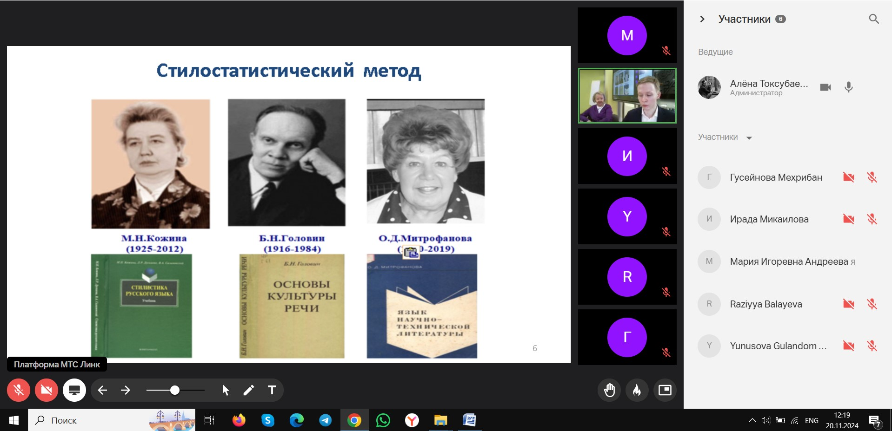
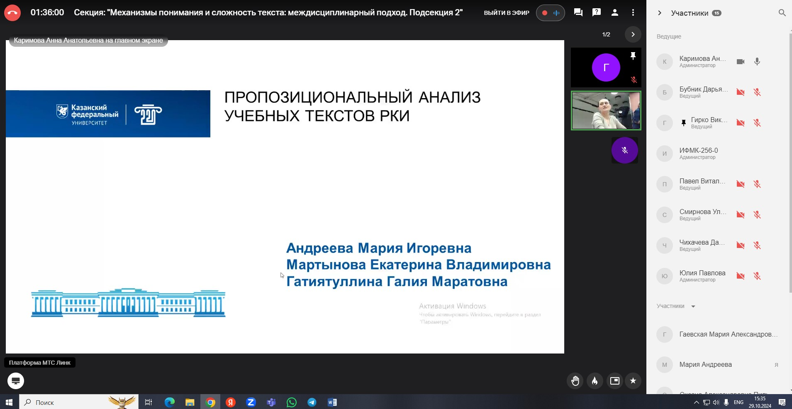
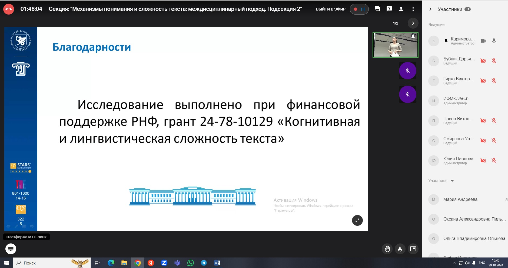
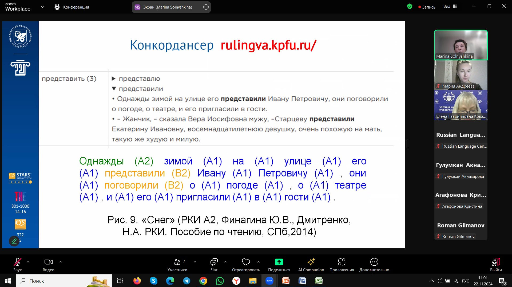
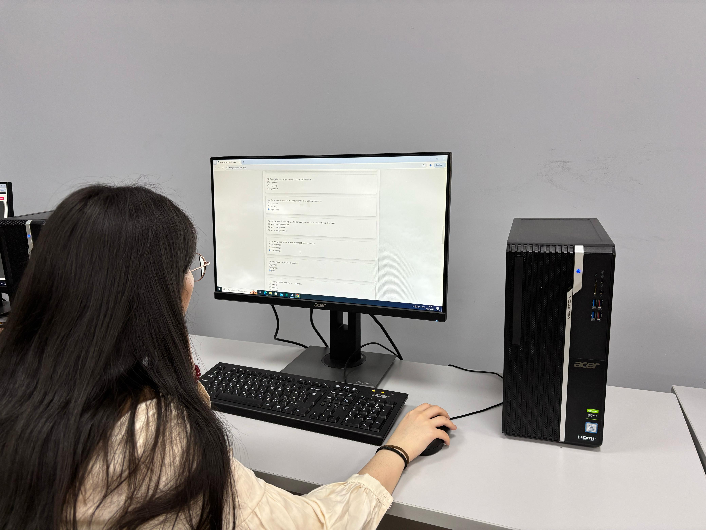
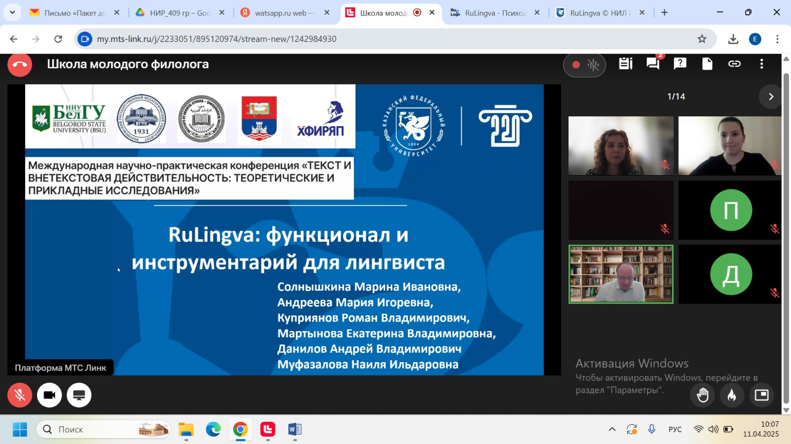